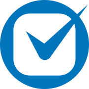

La firma recuerda.
Los observers interpretan señales de trabajo autorizadas. El Brain conecta personas, asuntos, compromisos y evidencias a medida que evoluciona el trabajo.
En desarrolloAI OPERATIONS PARA DESPACHOS DE ABOGADOS
Oakbase conecta el conocimiento de tu firma y gestiona agentes que ejecutan trabajo operativo sobre los sistemas que ya utilizas.

Atlas Ventures → Revisión de adquisición
Elena García · revisión · evidencia vinculada0:45 preparadas para tu aprobación
Tú apruebas → registro en tu sistema de horasUna visión conectada del trabajo
Recuperación de horas
Experiencia de producto ilustrativa. La recuperación de horas ya se utiliza. El Shared Firm Brain y el circuito conectado están en desarrollo.
01 / CÓMO FUNCIONA OAKBASE
Tu firma ya genera las señales. Oakbase conecta el contexto, prepara la siguiente acción y la ejecuta con la supervisión adecuada.
Los observers interpretan señales de trabajo autorizadas. El Brain conecta personas, asuntos, compromisos y evidencias a medida que evoluciona el trabajo.
En desarrolloUna operación gestionada utiliza el contexto relevante para preparar y ejecutar trabajo en aplicaciones conectadas, con reglas configuradas.
Recuperación de horas ya utilizadaRevisa el trabajo preparado, aprueba excepciones y consulta el resultado. El circuito del Brain está diseñado para conservar la referencia para la siguiente operación.
Supervisión humana02 / SHARED FIRM BRAIN
Una memoria viva de la firma. Sigue un asunto: una nueva señal añade contexto, detecta un cambio y permite actuar.
En desarrollo · Nombres y datos ficticiosSEÑAL DE TRABAJO
Revisión del contrato con Elena.
Una reunión es evidencia de actividad. El tiempo y su carácter facturable requieren confirmación.
«Gracias por la revisión de hoy. ¿Podríais enviar el contrato final el viernes en lugar del jueves?»
La reunión puede respaldar una propuesta de horas. El cambio de entrega solicitado requiere confirmación.
Abrir la operaciónSelecciona un elemento para ver su contexto
cliente deVista simplificada de la experiencia prevista del Brain. Las fuentes permanecen vinculadas a los datos que respaldan; los cambios no borran la evidencia anterior.
03 / MANAGED OPERATIONS AGENTS
Empieza por la recuperación de horas. El agente relaciona actividad y asuntos, prepara propuestas y registra las horas aprobadas mediante el flujo conectado.
Basada en experiencia real de recuperación de horas. Esta interfaz y su conexión con el nuevo Brain son ilustrativas.
Oakbase configura, despliega y gestiona el proceso. Los agentes pueden trabajar en segundo plano y trasladarte las decisiones que lo requieran.
Revisión diaria de trabajo sin registrar
 Calendario · 21 oct., 10:00–10:45
Calendario · 21 oct., 10:00–10:45
«Atlas / M-024 — revisión del contrato. Elena García».
Correo · 21 oct., 11:12
«Gracias por la revisión de hoy».
Fuentes ilustrativas. La duración de la reunión es una propuesta, no una prueba de tiempo facturable.
Solo simulación. No se envían datos ni se registran horas en un sistema real.
04 / IMPACTO PARA LA FIRMA
El valor está en la operación completada. Empieza por un proceso y acuerda cómo evaluar su impacto.
Detecta trabajo potencialmente sin registrar y prepara propuestas de horas para validar.
Recuperación de horas · ya utilizadaEvaluar: horas aprobadas registradasHaz visibles los compromisos y prepara el seguimiento antes de que quede olvidado.
Seguimiento de compromisos · caso diseñadoEvaluar: compromisos atendidosGestiona las tareas administrativas recurrentes con un proceso y responsabilidades claras.
Actualización de asuntos · caso diseñadoEvaluar: trabajo completado y excepciones05 / CONECTADO Y BAJO CONTROL
Oakbase trabaja sobre tus aplicaciones actuales. Cada operación se configura con los accesos, las reglas y los puntos de revisión que necesita tu firma.
La existencia de un conector no implica que todos los flujos estén listos. Confirmamos alcance y permisos para cada operación.
Las fuentes autorizadas y los permisos sobre aplicaciones se definen para cada operación.
El trabajo preparado, las aprobaciones y las excepciones quedan visibles para el profesional responsable.
Comprende qué respalda una propuesta y consulta el resultado en el sistema conectado.
EMPIEZA POR UNA OPERACIÓN
Revisemos tu proceso de recuperación de horas, los sistemas que utilizas y qué trabajo podría asumir Oakbase para tu equipo.
Explora tu primera operaciónhello@oakbase.ai